Техника высоких напряжений
Конспект темы
Тема 6. Пробой жидких диэлектриков
Вода и мостики, газ и давление, температура, время воздействия, барьеры, испытание масла
О чём тема. В темах 1–5 разряд шёл в газе. Теперь — в жидкости. Трансформаторное масло работает в трансформаторах, выключателях, вводах, кабелях; его прочность в чистом виде в десятки раз выше, чем у воздуха, но вода, волокна и газовые пузырьки снижают её в разы. Тема отвечает на вопросы, которые задают на любой подстанции: почему проба масла не прошла, что делать с влажным маслом зимой, зачем заливать под вакуумом, зачем в трансформаторе картонные барьеры. Интерактив. «Пробой жидких диэлектриков» на сайте курса: вкладка 0 показывает, как выглядит пробой; вкладки 1–6 повторяют разделы конспекта, под вкладками 1, 2, 3, 4, 6 — мини-опыты; вкладка 5 — виртуальное испытание масла по ГОСТ 6581-75; 7 — реальные случаи, 8 — задачи, 9 — тест (5 вариантов). Основной источник — учебник В. Ф. Важова, В. А. Лавриновича, разд. 1.2.1. |
После изучения темы вы сможете:
назвать жидкие диэлектрики высоковольтной техники и объяснить, чем техническое масло отличается от очищенного;
объяснить мостиковый механизм пробоя и роль воды в трёх её состояниях и волокон;
оценить, когда загорается газовый пузырёк в масле, и объяснить влияние давления и дегазации;
прочитать зависимость прочности масла от температуры и выбрать масло для северного климата;
объяснить зависимость прочности от времени воздействия, расстояния, полярности, объёма; описать принцип электроимпульсного разрушения пород;
объяснить действие барьеров и маслобарьерной изоляции;
провести испытание масла по ГОСТ 6581-75, обработать результат и сравнить его с нормами ПУЭ.
1. Обозначения
| Обозначение | Смысл | Единица |
|---|---|---|
| Uпр | пробивное напряжение (действующее значение для 50 Гц в ячейке ГОСТ 6581-75) | кВ |
| Eпр | электрическая прочность, пробивная напряжённость | кВ/см, кВ/мм |
| W | влагосодержание масла (1 г/т = 1 ppm = 0,0001 %) | г/т |
| Ws(t) | растворимость воды в масле при температуре t | г/т |
| RS | относительное насыщение, Wраств/Ws | — |
| ε, εr | относительная диэлектрическая проницаемость | — |
| d | диаметр газового пузырька | мм |
| p | давление | мм рт. ст., атм |
| τ | время воздействия напряжения | с |
| S, Sб | расстояние между электродами; от острия до барьера | мм, см |
| Ū, SU, V | среднее шести пробоев, среднюю квадратическую ошибку среднего, коэффициент вариации | кВ, кВ, % |
2. Жидкие диэлектрики в высоковольтной технике
Жидкие диэлектрики прочнее газов и хорошо отводят тепло, поэтому ими заполняют трансформаторы, реакторы, выключатели, вводы, конденсаторы и маслонаполненные кабели. По происхождению их делят на четыре группы: минеральные углеводороды — продукты перегонки нефти (трансформаторное, конденсаторное, кабельное масла); растительные масла (касторовое и др.); хлорированные ароматические углеводороды; кремнийорганические жидкости. По полярности молекул — на неполярные, слабополярные и сильнополярные.
| Группа | ρ, Ом·см | ε | tgδ |
|---|---|---|---|
| неполярные (минеральное масло) | ≈ 1018 | 1,8…2,5 | ≈ 0,001 |
| слабополярные | 1011…1012 | ≈ 2,5 | ≈ 0,01 |
| сильнополярные | 107…108 | ≈ 5 | > 0,1 |
Хорошо очищенная и обезгаженная жидкость выдерживает до 1000 кВ/см. На практике имеют дело с технически чистыми жидкостями: в них не меньше 10−2…10−3 % (по массе) воды, газов, волокон целлюлозы, частиц углерода и продуктов старения. Именно примеси определяют, при каком напряжении пробьётся масло в аппарате, поэтому вся тема — о примесях.
Вторая особенность — большой разброс. Отдельный пробой может отличаться от среднего на 50…70 %, среднее квадратическое отклонение — 10…15 %. Одного пробоя для вывода мало, поэтому стандарт требует шести (раздел 10).
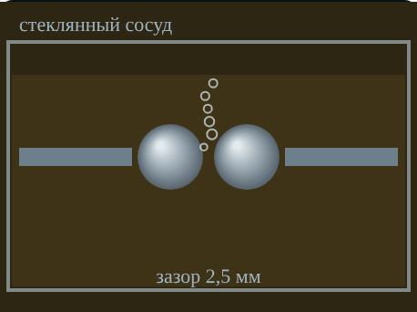
Рис. 1. Стандартная ячейка: зазор 2,5 мм, после пробоя в зазоре остаются газ и углерод (вкладка 0)
3. Вода, волокна и мостиковый механизм
3.1. Три состояния воды
Вода в масле бывает молекулярно растворённой, в виде эмульсии — капелек 2…10 мкм — и в виде отстоя на дне бака. Растворимость сильно зависит от температуры: по учебнику около 40·10−6 (40 г/т) при 20 °C и около 400·10−6 при 80 °C. В интерактиве между этими точками используется аппроксимация
(1)
Если воды больше, чем может раствориться, избыток выделяется эмульсией — это самое опасное состояние. При влагосодержании больше примерно 0,02 % капли сливаются и оседают. Отстой сам почти не снижает прочность, но говорит о сильном увлажнении. Для прочности важно не только сколько воды, но и насколько масло близко к насыщению — относительное насыщение RS = Wраств/Ws(t).
Рис. 2. Слева вода растворена, справа выделилась эмульсия — масло мутнеет (вкладка 0)
3.2. Мостик
У воды ε ≈ 80, у волокон целлюлозы ε ≈ 6,4 — больше, чем у масла (2,2). Капли и волокна поляризуются, втягиваются туда, где поле сильнее, и поворачиваются вдоль силовых линий. Из них собирается цепочка — мостик. По мостику течёт ток, масло нагревается до кипения; в разрывах цепочки поле резко усиливается, начинается ионизация, и промежуток пробивается. Волокна гигроскопичны: впитывают воду и облегчают сборку мостика, поэтому при одной и той же влажности масло с волокнами заметно слабее.
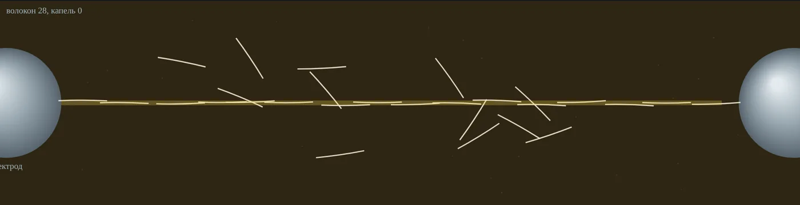
Рис. 3. Мостик из волокон и капель при U ≈ 0,9Uпр: частицы стянулись к оси между электродами (вкладка 1)
Зависимость прочности от влагосодержания (рис. 1.25 учебника) резкая: 0,01 % влаги снижает прочность масла в несколько раз. На рис. 2 показан тот же ход в единицах стандартной ячейки. Числа на графике получены по учебной модели интерактива; они передают форму кривых и порядок величин, но не заменяют протокол испытаний конкретного масла.
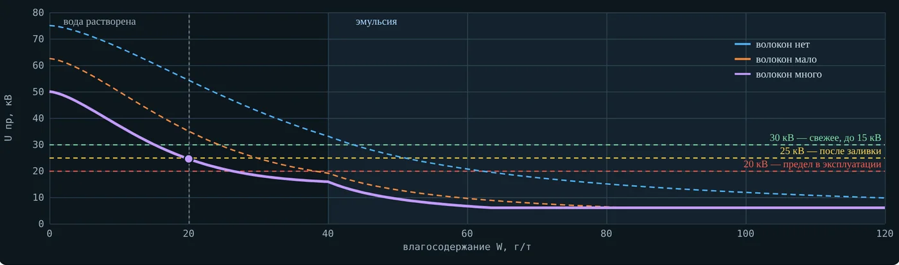
Рис. 4. Uпр в ячейке 2,5 мм от влагосодержания при 20 °C, без волокон и с волокнами; пунктиры — нормы для оборудования до 15 кВ (вкладка 1)
На коротких импульсах (единицы–десятки микросекунд) вода и волокна почти не влияют: частицы не успевают сместиться и выстроиться. Мостиковый механизм — механизм длительного напряжения.
4. Газ, пузырёк и давление
Газ в масле растворён (в недегазированном масле — до процентов по объёму) и выделяется пузырьками при нагреве, при понижении давления, при разложении масла разрядами. Пузырёк — слабое место по двум причинам. Во-первых, поле в нём больше, чем в масле. Для сферического включения с ε = 1 в среде с εr:
(2)
Во-вторых, газ пробивается по закону Пашена (тема 4) при напряжённостях в десятки раз меньше прочности масла. Напряжённость в масле, при которой загорается пузырёк диаметром d:
(3)
Для пузырька 0,5 мм при атмосферном давлении Uпр ≈ 2,88 кВ, Eзаж ≈ 4,71 кВ/мм. Это сравнимо с рабочими напряжённостями в масляных каналах (в учебнике для вводов с маслобарьерной изоляцией — 40…65 кВ/см, т. е. 4…6,5 кВ/мм). Загоревшись, пузырёк разлагает масло, газ выделяется, пузырёк растёт; так начинаются частичные разряды (тема 10) и пробой.
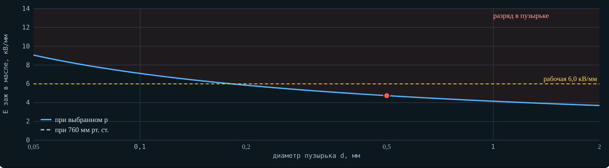
Рис. 5. Напряжённость зажигания пузырька от его диаметра; жёлтая линия — рабочая напряжённость, красная зона — разряд в пузырьке (вкладка 2)
Отсюда влияние давления. На 50 Гц Uпр масла растёт с давлением: газ в пузырьках сжат, его прочность выше. При понижении давления из недегазированного масла выходит растворённый газ, и прочность резко падает; у дегазированного масла она почти не меняется (рис. 1.26). На импульсах давление практически не влияет. Практический вывод: масло сушат и дегазируют, а в аппарат заливают под вакуумом.
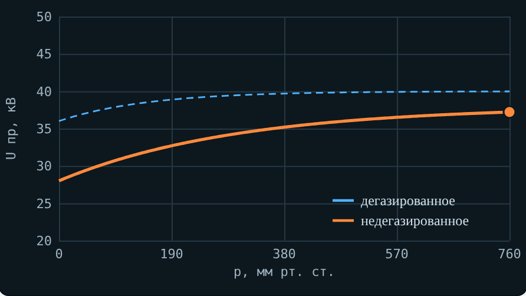
Рис. 6. Uпр ячейки от давления ниже атмосферного: дегазированное и недегазированное масло (вкладка 2, по ходу рис. 1.26)
5. Температура и северный климат
Чистое сухое масло почти не реагирует на температуру, пока не начнётся интенсивное испарение и кипение. У влажного масла зависимость сложнее (рис. 1.28): при охлаждении растворимость падает, растворённая вода выделяется в эмульсию, и прочность снижается до минимума около 0 °C. Ниже нуля капли замерзают, а у льда ε близка к ε масла — лёд почти не искажает поле, и прочность снова растёт. При 60…80 °C вода растворена — максимум; выше примерно 80 °C прочность падает из-за испарения и кипения.
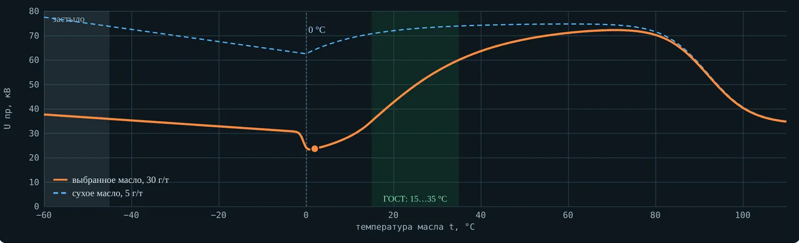
Рис. 7. Uпр от температуры: влажное масло (30 г/т) и сухое (5 г/т); зелёная полоса — 15…35 °C по ГОСТ 6581-75 (вкладка 3)
Из этого графика следуют три практических правила. Первое: пробу испытывают при 15…35 °C (ГОСТ 6581-75), иначе результаты несравнимы; холодную пробу выдерживают в закрытой банке до температуры помещения, чтобы на ней не сконденсировалась влага. Второе: опасный режим для влажного масла — остывание до температур чуть выше нуля, например у отключённого трансформатора в оттепель. Третье: на морозе главная опасность — не пробой, а загустевание масла: нарушаются циркуляция и охлаждение, неправильно работают приводы в масле.
Поэтому для северных районов важна температура застывания. У масла ТКп (ГОСТ 982-80) она не выше −45 °C, у арктического масла АГК (ТУ 38.1011271-89) — не выше −60 °C; АГК рекомендовано для трансформаторов арктического исполнения. ПУЭ (табл. 1.8.33, прим. 1) не требует проверки температуры застывания только для умеренного климата — для Кольского полуострова её проверяют.
Рис. 8. Состояние воды в масле при +2 °C: часть воды выделилась в эмульсию (вкладка 3)
6. Время воздействия и механизм пробоя
Прочность масла сильно зависит от того, как долго приложено напряжение (рис. 1.29). На полной вольт-секундной характеристике технического масла две области. Область I (τ < 10−3 с): вода и волокна не успевают переместиться и почти не влияют. При τ < 10−5 с прочность резко растёт: время воздействия сравнимо со временем формирования разряда. Область II (τ > 10−3 с): успевают сработать влага, волокна и пузырьки, образующиеся при нагреве токами проводимости, — прочность падает, тем сильнее, чем грязнее масло.
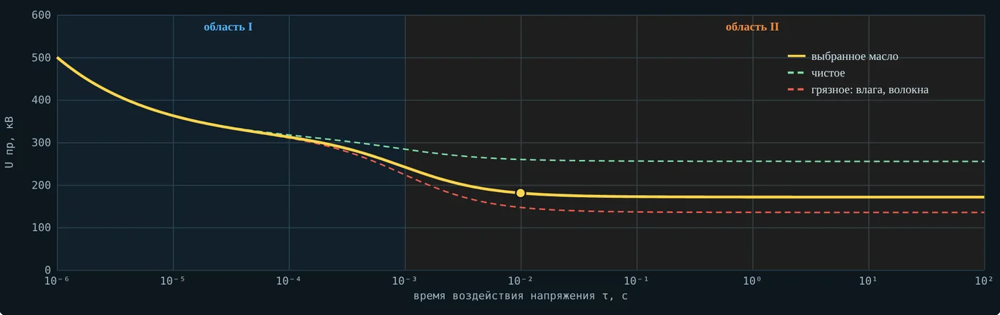
Рис. 9. Вольт-секундная характеристика масла: области I и II, чистое и грязное масло (вкладка 4)
Соответственно механизмов пробоя два. При длительном напряжении — мостики из поляризованных частиц, нагрев, кипение, пузырьки; газ образуется ещё и при диссоциации молекул и электролизе. В пузырьках развивается ударная ионизация, растут стримерные каналы к противоположному электроду; в сантиметровых промежутках, как в газах, пробой имеет лидерный характер. При импульсах короче 10−3 с примеси не успевают сработать; разряд начинается при напряжённостях около 100 кВ/см — за счёт эмиссии электронов с катода, ударной ионизации у катода, автоионизации у анода и локального вскипания.
Стримеры в масле видны глазом и на фотографиях. При положительном острие стример тонкий, нитевидный, ветвистый и быстрый; при отрицательном — густой «куст», растёт медленнее.
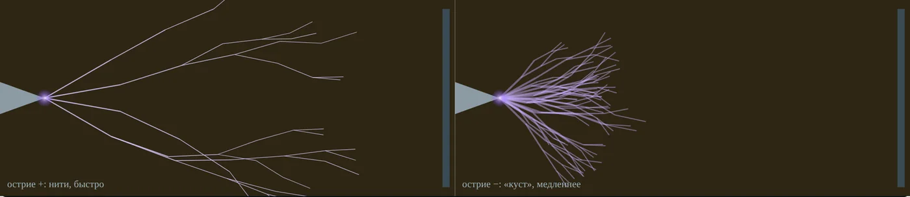
Рис. 10. Стримеры у острия в масле: положительный (слева) и отрицательный (справа), схематично (вкладка 4)
7. Расстояние, полярность, площадь и объём
Как и в газах, рост неоднородности поля снижает пробивное напряжение, но в масле даже небольшое увеличение радиуса кривизны электрода даёт больший выигрыш, чем в воздухе. С ростом расстояния Uпр растёт медленнее, чем расстояние:
(4)
где A и n зависят от жидкости и условий пробоя (ф. 1.50). Средняя прочность U/S поэтому падает с ростом промежутка. В несимметричном промежутке острие — плоскость Uпр при отрицательном острие выше, чем при положительном (рис. 1.30); у полярных жидкостей эффект сильнее, у воды — до 2…2,5 раза. Выше всех кривые для импульсов, ниже — для постоянного напряжения.
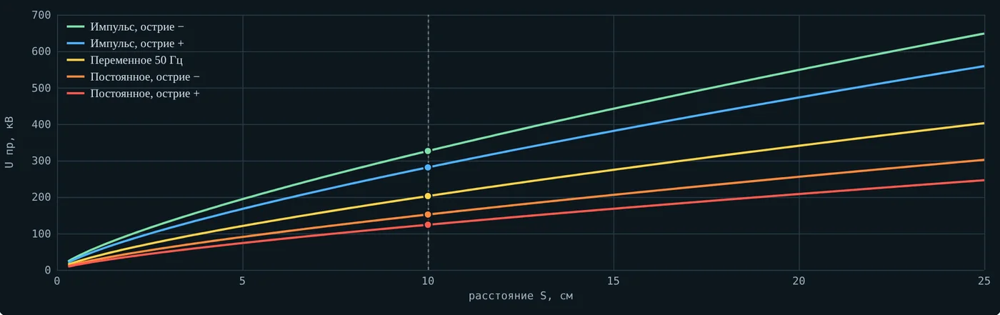
Рис. 11. Uпр масляного промежутка острие — плоскость от расстояния для пяти видов напряжения (вкладка 4, по форме рис. 1.30; n = 0,75)
При неизменном зазоре на прочность влияют площадь электродов и объём жидкости под сильным полем: чем они больше, тем ниже Uпр. Пробой идёт «по слабому звену», а в большом объёме обязательно найдётся частица, волокно или пузырёк. Это удобно описывать распределением Вейбулла: U ∝ (V/V0)−1/m, где показатель m тем больше, чем меньше разброс. Разбросу 10…15 % соответствует m ≈ 10. Тогда при объёме в 104 раз больше, чем в ячейке, типичное Uпр ниже в 100,4 ≈ 2,5 раза. Поэтому ячейка 2,5 мм — инструмент контроля качества масла, а не расчёта конструкции. Загрязнение, окисление и плохая полировка электродов тоже снижают прочность; материал электродов влияет только в промежутках меньше нескольких миллиметров.
8. Импульс короче микросекунды: инверсия прочности
С уменьшением длительности импульса прочность жидкостей растёт быстрее, чем прочность твёрдых тел. Вольт-секундные характеристики пересекаются (рис. 1.39): при экспозиции меньше примерно 10−6 с горная порода электрически слабее трансформаторного масла, а меньше (2…3)·10−7 с — слабее даже технической воды. Точка пересечения Ак — точка равнопрочности.
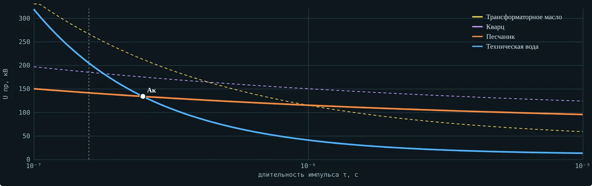
Рис. 12. Вольт-секундные характеристики жидкостей и пород в промежутке 10 мм; Ак — точка равнопрочности воды и песчаника (вкладка 4, по форме рис. 1.39)
Если к электродам, прижатым к поверхности куска породы в жидкости, приложить импульс левее Ак, то с вероятностью больше 50 % пробой пройдёт не по жидкости вдоль поверхности, а внутри камня — разряд «внедряется» в твёрдое тело и раскалывает его. На этом основана электроимпульсная технология дробления, избирательного раскрытия руд и бурения, развитая в Томском политехническом университете. Для воды нужен фронт порядка 10−7 с, для масла достаточно 10−6 с.
Рис. 13. Разряд внедряется в камень, когда импульс короче времени равнопрочности (вкладка 4)
9. Барьеры и маслобарьерная изоляция
Лист электрокартона в масле между электродами — барьер — заметно повышает прочность промежутка. Причин две. Барьер непроницаем для ионов: они оседают на нём, заряд растекается по поверхности, и поле за барьером выравнивается — барьер работает как второй, плоский электрод. Кроме того, барьер разрывает мостики из волокон. Эффект сильнее в неоднородном поле и при длительном напряжении, на коротких импульсах — меньше.
В опыте, приведённом в учебнике (рис. 1.31: острие — плоскость, S = 75 мм, картон 5 мм, 50 Гц), наибольший эффект — при Sб ≈ 0,25S: пробивное напряжение почти вдвое больше, чем без барьера. Тот же оптимум, (0,2…0,3)S, наблюдается в газах и твёрдых диэлектриках.
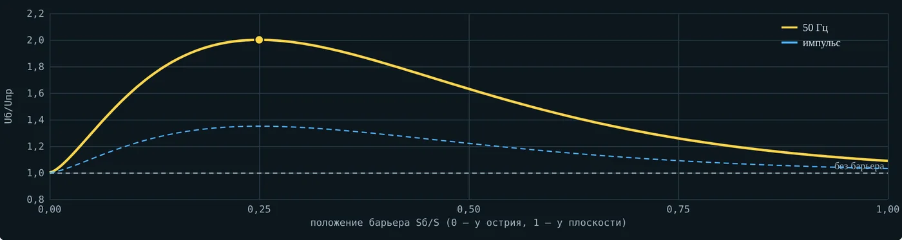
Рис. 14. Отношение Uб/Uпр от положения барьера: 50 Гц и импульс (вкладка 6, по форме рис. 1.31)
На этом построена маслобарьерная изоляция трансформаторов, реакторов и вводов: масляный промежуток между обмотками разделён цилиндрами и шайбами из электрокартона на узкие каналы. Узкий канал прочнее широкого (по ф. 1.50 средняя прочность растёт при уменьшении промежутка), барьеры не дают собраться длинному мостику. Допустимые напряжённости в масле для вводов с маслобарьерной изоляцией — 40…65 кВ/см в зависимости от толщины канала. Число барьеров ограничивает охлаждение: слишком узкие каналы плохо пропускают масло.
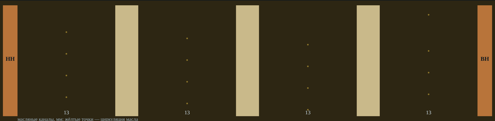
Рис. 15. Промежуток между обмотками с тремя барьерами: масляные каналы по 12,8 мм (вкладка 6)
10. Испытание масла по ГОСТ 6581-75 и нормы
Пробивное напряжение масла определяют по ГОСТ 6581-75 «Материалы электроизоляционные жидкие. Методы электрических испытаний» на переменном напряжении 50 Гц.
Ячейка — сосуд из стекла, кварца или пластмассы; стенки не ближе 12 мм к электродам, электроды погружены не меньше чем на 15 мм; шероховатость электродов Ra ≤ 0,20 мкм.
Зазор между электродами (2,5 ± 0,05) мм; проверяют калибрами: 2,45 мм проходит, 2,55 мм — нет.
Пробу испытывают при 15…35 °C. Сосуд с пробой несколько раз осторожно переворачивают, ячейку ополаскивают пробой и медленно заполняют по стенке, без пузырьков.
Через 10 мин после заполнения подают напряжение и равномерно поднимают его со скоростью 2 кВ/с ± 20 % до пробоя.
Делают шесть пробоев с интервалом 5 мин; после каждого масло между электродами осторожно перемешивают стеклянной палочкой.
Результат — среднее арифметическое шести значений. Считают среднюю квадратическую ошибку среднего и коэффициент вариации V; если V > 20 %, ячейку заполняют второй раз той же пробой, делают ещё шесть пробоев и считают по 12 значениям. Если и тогда V > 20 %, качество масла признают неудовлетворительным (п. 4.3).
Ū = ΣUᵢ/n; Sᵤ = √[Σ(Uᵢ − Ū)²/(n(n − 1))]; V = Sᵤ/Ū · 100 %. (5)
Нормы для свежего масла и масла сразу после заливки задаёт ПУЭ (7-е изд., гл. 1.8, п. 1.8.36, табл. 1.8.33). Для масла в эксплуатации предельно допустимые значения приведены в РД 34.45-51.300-97 «Объём и нормы испытаний электрооборудования» (разд. 25); в электросетевых компаниях применяют СТО 34.01-23.1-001 (редакцию и применимость проверяют по действующему перечню организации). Перед применением сверяйте значения с документом, действующим в вашей организации.
| Класс напряжения оборудования | Свежее сухое масло перед заливкой, кВ, не менее | Сразу после заливки, кВ, не менее | Эксплуатация, предельно допустимое, кВ |
|---|---|---|---|
| до 15 кВ | 30 | 25 | 20 |
| св. 15 до 35 кВ | 35 | 30 | 25 |
| от 60 до 150 кВ | 60 | 55 | по РД, разд. 25 |
| от 220 до 500 кВ | 65 | 60 | по РД, разд. 25 |
Та же таблица ПУЭ требует отсутствия механических примесей (визуально) и взвешенного угля, нейтральной реакции водной вытяжки, нормирует кислотное число, температуру вспышки и tgδ масла. Эксплуатационные масла контролируют по РД 34.43.105-89 «Методические указания по эксплуатации трансформаторных масел».
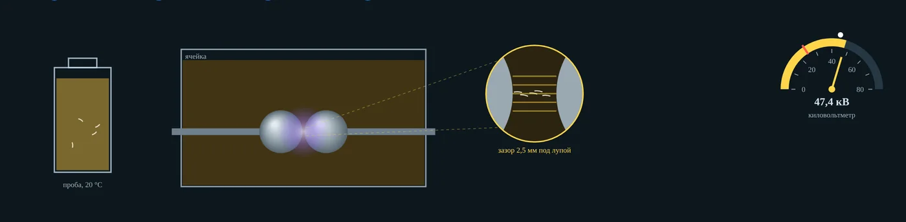
Рис. 16. Виртуальное испытание по ГОСТ 6581-75: сосуд с пробой, ячейка, зазор 2,5 мм под лупой (частицы выстраиваются в поле) и киловольтметр с нормой (вкладка 5)
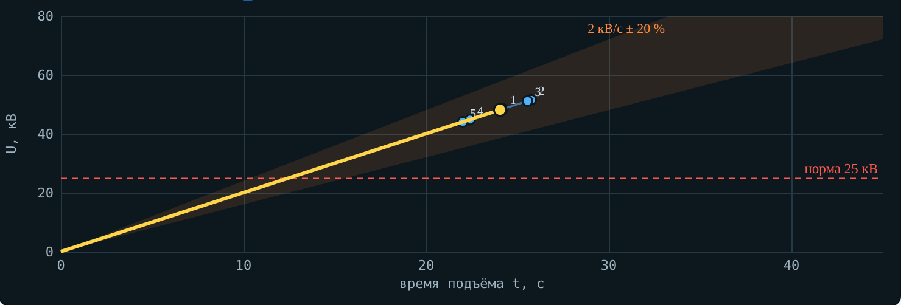
Рис. 17. Подъёмы напряжения со скоростью 2 кВ/с ± 20 %: каждый обрывается на пробое — виден разброс (вкладка 5)
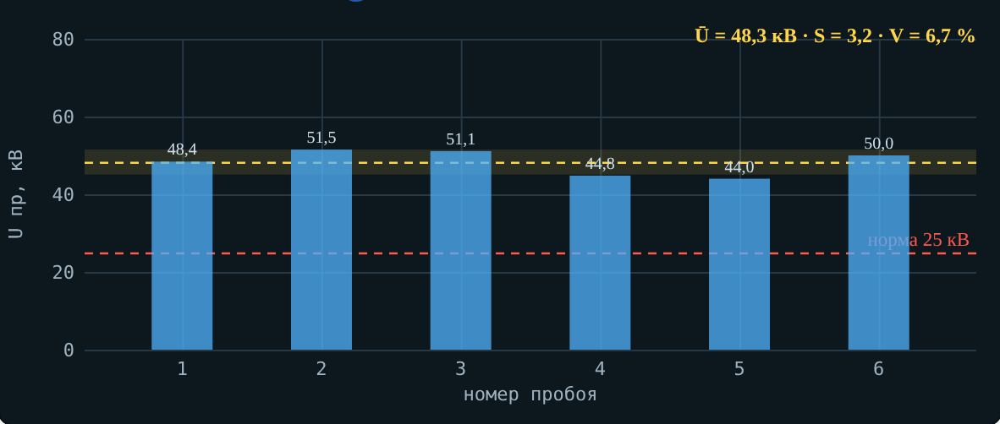
Рис. 18. Шесть пробоев, среднее Ū, полоса ± S и норма (вкладка 5)
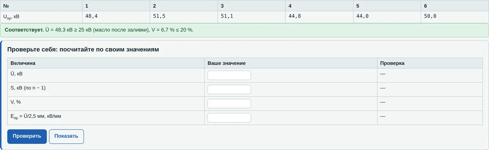
Рис. 19. Результат шести пробоев, расчёт Ū, S, V и вывод о соответствии норме (вкладка 5)
11. Где это встречается на производстве
КТП и трансформаторы карьеров и рудников: увлажнение масла через отработавший воздухоосушитель в оттепели — проба ниже нормы, масло сушат или меняют.
Масляные и маломасляные выключатели шахтных подстанций: дуга разлагает масло на газы и углерод; масло меняют после числа отключений КЗ, указанного заводом.
Монтаж и ремонт трансформаторов: вакуумная заливка дегазированным маслом и выдержка перед включением, фильтрация от волокон после замены бумажной изоляции.
Северные объекты: выбор масла по температуре застывания (ТКп — не выше −45 °C, АГК — не выше −60 °C), проверка застывания по ПУЭ.
Обогатительные фабрики: электроимпульсное дробление и избирательное раскрытие руд — разряд внедряется в камень на импульсах короче микросекунды.
12. Главное
Чистая жидкость прочнее газа в десятки раз, техническая — в разы слабее чистой из-за воды, газа и волокон; разброс пробоев большой.
Самая опасная форма воды — эмульсия. Важна близость к насыщению, а растворимость сильно растёт с температурой.
Мостик: капли и волокна (ε больше, чем у масла) выстраиваются вдоль поля; механизм работает при длительном напряжении.
Поле в газовом пузырьке в 1,22 раза больше, чем в масле, а газ пробивается по Пашену — пузырёк начинает пробой. Отсюда дегазация и вакуумная заливка.
Влажное масло имеет минимум прочности около 0 °C и максимум при 60…80 °C; на морозе опасно загустевание — нужна низкая температура застывания.
На импульсах примеси не успевают сработать; при τ < 10−6 с жидкость прочнее породы — основа электроимпульсной технологии.
Uпр = A·Sn, n < 1; отрицательное острие прочнее; большой объём — ниже прочность.
Барьер в 0,25S от острия почти удваивает Uпр на 50 Гц; маслобарьерная изоляция — масло, разделённое картоном на узкие каналы.
Испытание по ГОСТ 6581-75: 2,5 мм, 2 кВ/с, шесть пробоев через 5 мин, среднее, V ≤ 20 %; нормы — ПУЭ, табл. 1.8.33.
13. Контрольные вопросы
Чем технически чистая жидкость отличается от очищенной и почему у жидкостей большой разброс пробивных напряжений?
Назовите три состояния воды в масле. Какое из них опаснее всего и почему?
Почему капли воды и волокна выстраиваются в мостик? Почему мостики не успевают образоваться на импульсах?
Выведите, во сколько раз поле в газовом пузырьке больше поля в масле. Почему пузырёк загорается при относительно небольшой напряжённости?
Объясните ход кривых рис. 1.26: почему недегазированное масло теряет прочность при откачке?
Почему у влажного масла минимум прочности около 0 °C, а ниже нуля прочность растёт?
Почему пробу масла, отобранную зимой, нельзя открывать сразу в тёплой лаборатории?
Опишите две области вольт-секундной характеристики масла и механизмы пробоя в них.
Что такое инверсия прочности жидкости и породы? Как её используют в горном деле?
Почему при отрицательном острие Uпр выше? Как выглядят положительный и отрицательный стримеры?
Как действует барьер в масле и где его ставить?
Перечислите основные требования ГОСТ 6581-75 к испытанию масла. Что делать, если V > 20 %?
Какие нормы пробивного напряжения масла установлены ПУЭ для оборудования до 15 кВ?
14. Литература и нормативные документы
Важов В. Ф., Лавринович В. А. Техника высоких напряжений: учебник. — Томск: Изд-во ТПУ, 2014. — Разд. 1.2.1 «Пробой жидких диэлектриков», разд. 1.2.2 (рис. 1.39–1.40).
Правила устройства электроустановок. 7-е изд. Гл. 1.8 «Нормы приёмо-сдаточных испытаний»: п. 1.8.16 (силовые трансформаторы), п. 1.8.33, табл. 1.8.33 (трансформаторное масло).
ГОСТ 6581-75. Материалы электроизоляционные жидкие. Методы электрических испытаний.
ГОСТ 982-80. Масла трансформаторные. Технические условия.
ГОСТ 10121-76. Масло трансформаторное селективной очистки. Технические условия.
ТУ 38.1011271-89. Масло трансформаторное АГК.
РД 34.45-51.300-97. Объём и нормы испытаний электрооборудования. Разд. 25 «Трансформаторное масло».
СТО 34.01-23.1-001 (редакцию и применимость проверяют по действующему перечню организации). Объём и нормы испытаний электрооборудования. — ПАО «Россети».
РД 34.43.105-89. Методические указания по эксплуатации трансформаторных масел.
IEC 60156:2018. Insulating liquids — Determination of the breakdown voltage at power frequency — Test method.
IEC 60422:2013. Mineral insulating oils in electrical equipment — Supervision and maintenance guidance.
Lesaint O. Prebreakdown phenomena in liquids: propagation «modes» and basic physical properties // J. Phys. D: Appl. Phys. — 2016. — Vol. 49. — 144001.